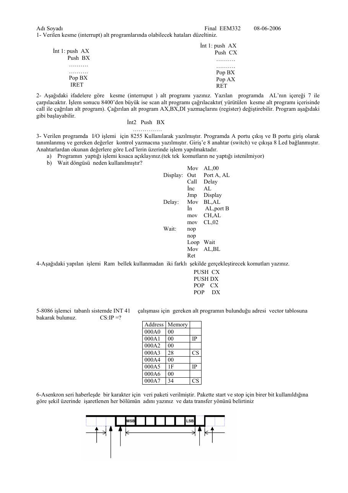
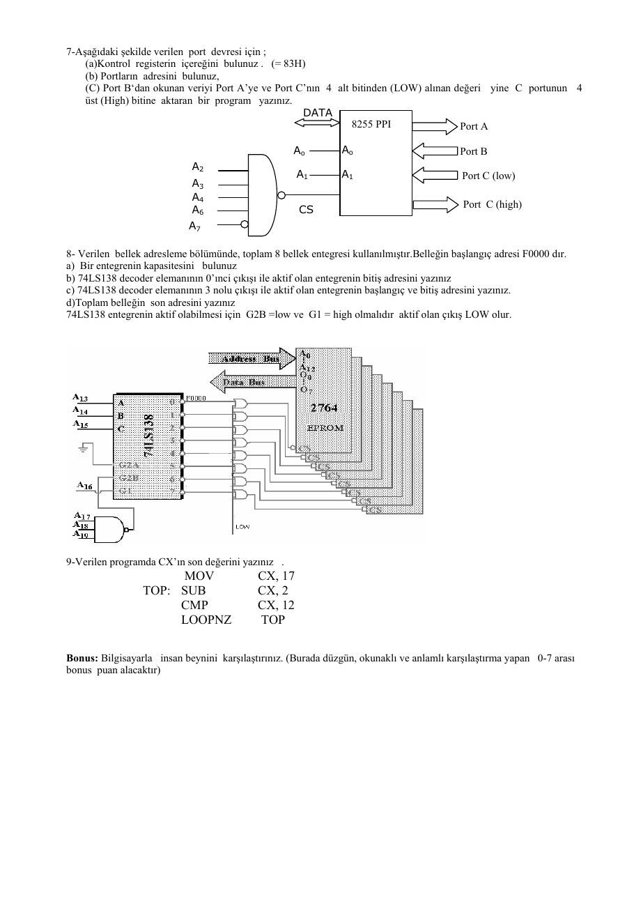
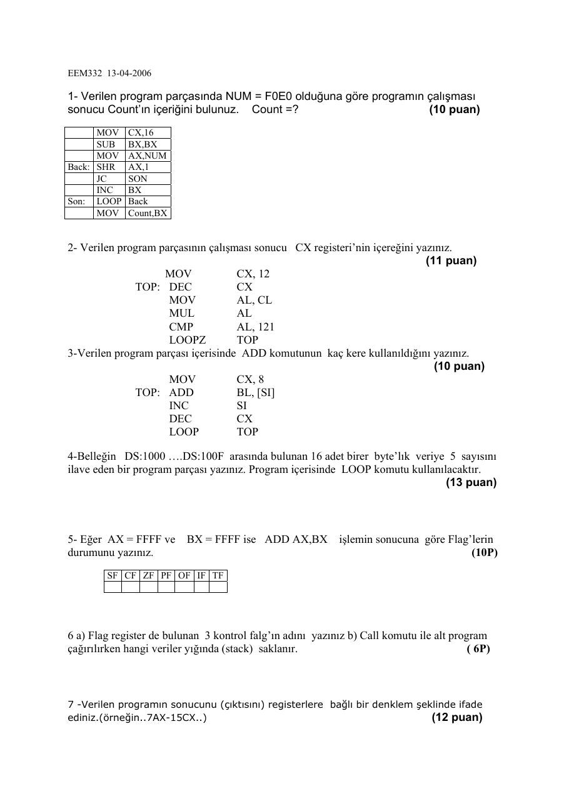
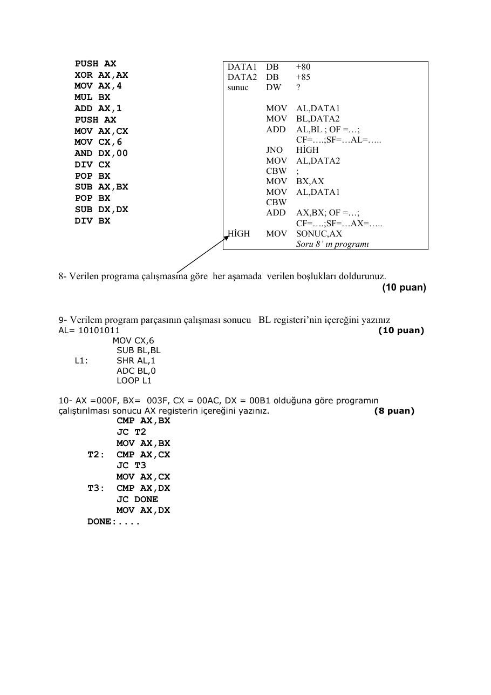

· EEM332
EEM332 Mikroişlemciler: 2006 Vize ve Final Soruları
EEM332 – Mikroişlemciler · 15.04.2006 · 18.10.2026
Bu yazı, Başkent Üniversitesi EEM332 Mikroişlemciler ders arşivindeki ilgili notları ve uygulamaları bir araya getiriyor (2006–2006). 2006 vize ve finali: komut izleme, bayraklar, kesmeler, bellek adresleme ve çevrebirim tasarımı. Belgelerin PDF arşiv kopyaları ve varsa kaynak kodları yazının sonunda ZIP olarak indirilebilir.
EEM332_06final
Adı Soyadı Final EEM332 08-06-2006 1- Verilen kesme (interrupt) alt programlarında olabilecek hataları düzeltiniz.
İnt 1: push AX
İnt 1: push AX Push CX
Push BX .. . . Pop BX
Pop BX Pop AXIRET RET
2- Aşağıdaki ifadelere göre kesme (interruput ) alt programı yazınız. Yazılan programda ALnın içereği 7 ile çarpılacaktır. İşlem sonucu 8400den büyük ise scan alt programı çağrılacaktır( yürütülen kesme alt programı içerisinde
call ile çağrılan alt program). Çağırılan alt program AX,BX,DI yazmaçlarını (register) değiştirebilir. Program aşağıdakigibi başlayabilir. İnt2 Push BX
3- Verilen programda I/O işlemi için 8255 Kullanılarak yazılmıştır. Programda A portu çıkış ve B portu giriş olarak tanımlanmış ve gereken değerler kontrol yazmacına yazılmıştır. Girişe 8 anahtar (switch) ve çıkışa 8 Led bağlanmıştır. Anahtarlardan okunan değerlere göre Ledlerin üzerinde işlem yapılmaktadır. a) Programın yaptığı işlemi kısaca açıklayınız.(tek tek komutların ne yaptığı istenilmiyor) b) Wait döngüsü neden kullanılmıştır?
Mov AL,00
Display: Out Port A, AL
Call Delay
İnc AL
Jmp Display
Delay: Mov BL,AL
İn AL,port B
mov CH,AL
mov CL,02
Wait: nop
nop
Loop Wait
Mov AL,BL
Ret4-Aşağıdaki yapılan işlemi Ram bellek kullanmadan iki farklı şekilde gerçekleştirecek komutları yazınız.
PUSH CX
PUSH DX
POP CX
POP DX5-8086 işlemci tabanlı sistemde INT 41 çalışması için gereken alt programın bulunduğu adresi vector tablosuna bakarak bulunuz. CS:IP =?
Address Memory000A0 00
000A1 00 IP
000A2 00
000A3 28 CS
000A4 00
000A5 1F IP
000A6 00
000A7 34 CS
6-Asenkron seri haberleşde bir karakter için veri paketi verilmiştir. Pakette start ve stop için birer bit kullanıldığına göre şekil üzerinde işaretlenen her bölümün adını yazınız ve data transfer yönünü belirtiniz
7-Aşağıdaki şekilde verilen port devresi için ; (a)Kontrol registerin içereğini bulunuz . (= 83H) (b) Portların adresini bulunuz, (C) Port Bdan okunan veriyi Port Aye ve Port Cnın 4 alt bitinden (LOW) alınan değeri yine C portunun 4 üst (High) bitine aktaran bir program yazınız.
DATA
8255 PPI Port A
Ao Ao Port B
A2
A1 A1 Port C (low)
A3
A4
Port C (high)
A6 CS
A7
8- Verilen bellek adresleme bölümünde, toplam 8 bellek entegresi kullanılmıştır.Belleğin başlangıç adresi F0000 dır. a) Bir entegrenin kapasitesini bulunuz b) 74LS138 decoder elemanının 0ınci çıkışı ile aktif olan entegrenin bitiş adresini yazınız c) 74LS138 decoder elemanının 3 nolu çıkışı ile aktif olan entegrenin başlangıç ve bitiş adresini yazınız. d)Toplam belleğin son adresini yazınız 74LS138 entegrenin aktif olabilmesi için G2B =low ve G1 = high olmalıdır aktif olan çıkış LOW olur.
9-Verilen programda CXın son değerini yazınız .
MOV CX, 17
TOP: SUB CX, 2
CMP CX, 12
LOOPNZ TOPBonus: Bilgisayarla insan beynini karşılaştırınız. (Burada düzgün, okunaklı ve anlamlı karşılaştırma yapan 0-7 arası bonus puan alacaktır)


2006 vize
EEM332 13-04-2006
1- Verilen program parçasında NUM = F0E0 olduğuna göre programın çalışması sonucu Countın içeriğini bulunuz. Count =? (10 puan)
MOV CX,16
SUB BX,BX
MOV AX,NUM
Back: SHR AX,1
JC SON
INC BX
Son: LOOP Back
MOV Count,BX2- Verilen program parçasının çalışması sonucu CX registerinin içereğini yazınız. (11 puan)
MOV CX, 12
TOP: DEC CX
MOV AL, CL
MUL AL
CMP AL, 121
LOOPZ TOP3-Verilen program parçası içerisinde ADD komutunun kaç kere kullanıldığını yazınız. (10 puan)
MOV CX, 8
TOP: ADD BL, [SI]
INC SI
DEC CX
LOOP TOP4-Belleğin DS:1000 .DS:100F arasında bulunan 16 adet birer bytelık veriye 5 sayısını ilave eden bir program parçası yazınız. Program içerisinde LOOP komutu kullanılacaktır. (13 puan)
5- Eğer AX = FFFF ve BX = FFFF ise ADD AX,BX işlemin sonucuna göre Flaglerin durumunu yazınız. (10P)
SF CF ZF PF OF IF TF
6 a) Flag register de bulunan 3 kontrol falgın adını yazınız b) Call komutu ile alt program çağırılırken hangi veriler yığında (stack) saklanır. ( 6P)
7 -Verilen programın sonucunu (çıktısını) registerlere bağlı bir denklem şeklinde ifade ediniz.(örneğin..7AX-15CX..) (12 puan)
PUSH AX DATA1 DB +80
XOR AX,AX DATA2 DB +85
MOV AX,4 sunuc DW ?
MUL BX
ADD AX,1 MOV AL,DATA1
PUSH AX MOV BL,DATA2
MOV AX,CX ADD AL,BL ; OF = ;
MOV CX,6 CF= .;SF= AL= ..
AND DX,00 JNO HİGH
DIV CX MOV AL,DATA2CBW ;
POP BX
MOV BX,AX
SUB AX,BX
MOV AL,DATA1
POP BX CBW
SUB DX,DX ADD AX,BX; OF = ;
DIV BX CF= .;SF= AX= ..HİGH MOV SONUC,AX
Soru 8 ın programı
8- Verilen programa çalışmasına göre her aşamada verilen boşlukları doldurunuz. (10 puan)
9- Verilem program parçasının çalışması sonucu BL registerinin içereğini yazınız AL= 10101011 (10 puan)
MOV CX,6
SUB BL,BL
L1: SHR AL,1ADC BL,0
LOOP L110- AX =000F, BX= 003F, CX = 00AC, DX = 00B1 olduğuna göre programın çalıştırılması sonucu AX registerin içereğini yazınız. (8 puan)
CMP AX,BX
JC T2
MOV AX,BX
T2: CMP AX,CX
JC T3
MOV AX,CX
T3: CMP AX,DX
JC DONE
MOV AX,DXDONE:....


Açıklamalı kopyaların sonuç kontrolü
2006 vizesinin el yazısı eklerinde NUM=F0E0H için sıfır bitlerini sayan döngü bulunur; sonuç Count=9’dur. CX=12 ile başlayıp DEC CX, MOV AL,CL, MUL AL, CMP AL,121 ve LOOPZ uygulayan programın son CX değeri 8’dir. CX’in hem DEC hem LOOP tarafından azaltıldığı, CX=8 ile başlayan başka döngüde ADD komutunun dört kez çalıştığı görülür.
Not: El yazısı cevaplarda ilk döngü için 10 ve son karşılaştırma için AX=00B1H okunmaktadır. LOOPZ de CX’i azalttığından ilk sonuç 8’dir. CMP/JC ile küçük değeri tutan karşılaştırma zincirinde AX=000FH, BX=003FH, CX=00ACH, DX=00B1H için son AX=000FH kalır.
FFFFH+FFFFH toplamı FFFEH’dir: CF=1, SF=1, ZF=0, PF=0 ve OF=0. IF ve TF bu toplama tarafından değiştirilmez. +80 ile +85’in sekiz bit toplamı A5H, ayrı CBW genişletmelerinden sonraki word toplamı 00A5H’dir.
Not: El yazısındaki PF=1 ve OF=1 cevapları bu toplama için doğru değildir. Kaynak kopya korunmuş; kontrol sonuçları burada ayrıca belirtilmiştir. Fotoğraftan aktarılan notlar indirme ZIP’ine eklenmemiştir.
2006 finalinin el yazısı çözümleri
Kesme yordamı sorusunda PUSH AX, PUSH BX sırasının POP BX, POP AX ile ters sırada geri alınması gerektiği yazılmıştır. İkinci yordamda PUSH CX’in karşılığı POP CX olmalı; RET yerine IRET kullanılmalıdır.
Not: AL’yi 7 ile çarpıp 8400’den büyükse alt program çağıran soruda, AL işaretsiz sekiz bit kabul edilirse en büyük çarpım 255×7=1785’tir. Bu durumda belirtilen eşik aşılamaz. Kaynaktaki koşul korunmuştur.
8255 ve sekiz LED sorusundaki açıklama, PORTA çıkışında 00H’den FFH’ye doğru ikili sayım yapıldığını belirtir. Gecikme yordamı mevcut AL’yi BL’ye saklar; PORTB’den okunan değeri CH’ye, 02H’yi CL’ye yükleyerek bekleme süresini CX ile belirler. Wait döngüsü LED durumlarının gözle izlenebilmesini sağlar; dönüşte AL geri yüklenir.
CX ve DX’i yığın kullanmadan değiştirmek için iki çözüm verilmiştir:
XCHG CX,DXMOV AX,CX
MOV CX,DX
MOV DX,AXİkinci çözüm AX’in eski içeriğini korumaz.
INT 41 sorusunda el yazısı hesap 41×4=164=00A4H vektör başlangıcını bulur. Tabloda 00A4–00A7 adreslerinin baytları sırasıyla 00H, 1FH, 00H ve 34H’dir. El yazısında CS:IP için 0034:001F yazılmıştır.
Not: 8086 little-endian düzeniyle doğru okuma CS:IP=3400H:1F00H olur. Sayısal 41 burada onluk yorumlanmıştır; INT 41H farklı bir vektördür.
Asenkron seri veri çiziminde sağda start, ardından LSB’den başlayan veri bitleri; solda parite ve stop işaretlenmiştir.
Not: Fotoğraftaki aktarım oku sağa çizilmiş olsa da bu yerleşimde zaman sırası sağdan sola ilerler: start → LSB’den MSB’ye veri → parite → stop.
Port devresi için el yazısı kontrol sözcüğü 83H’dir: mod 0, A çıkış, B giriş, C alt dört bit giriş ve üst dört bit çıkış. Cevapta A/B/C/kontrol adresleri 3CH/3DH/3EH/3FH verilmiş; PORTB’den PORTA’ya veri taşıma, PORTC’yi okuma ve AND AL,0FH ile alt dört biti seçme adımları yazılmıştır.
Not: Şemada kod çözücüye A2, A3, A4, A6 ve terslenmiş A7 bağlanmış görünmektedir. Bu etiketler esas alınırsa temel adresler 5CH–5FH olur; A5 çözülmediği için 7CH–7FH de aynı aygıtı seçer. El yazısındaki 3CH–3FH cevabı A6 yerine A5 bağlanmasıyla uyumludur. Ayrıca C’nin alt yarısını üst yarıya aktarmak için maskelenen değer dört bit sola kaydırılmalıdır; yalnız AND ve OUT yeterli değildir.
2764 EPROM sorusunda A0–A12 on üç adres hattı verir: bir entegre 8 KiB, sekiz entegre toplam 64 KiB’dir. F0000H başlangıcı için sıfırıncı bloğun sonu F1FFFH; üçüncü bloğun başlangıcı F6000H, sonu F7FFFH; tüm belleğin sonu FFFFFH olur. LOOPNZ sorusunda son CX=11 cevabı verilmiştir ve komut izleme ile doğrulanır.